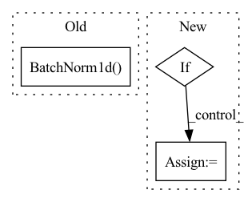

Pattern ID :1072

Before Change
block += batch_norm * [nn.BatchNorm1d(output_size)] + [activation]
block += [spectral_norm(nn.Linear(input_size, output_size)) if spect_norm else
nn.Linear(input_size, output_size)]
block += batch_norm * [nn.BatchNorm1d(output_size)]
self.shortcut = nn.Sequential(*shortcut)
self.block = nn.Sequential(*block)
After Change
else:
shortcut = [spectral_norm(nn.Linear(input_size, output_size)) if spect_norm else
nn.Linear(input_size, output_size)]
if norm:
shortcut += [norm(output_size)]
block = [spectral_norm(nn.Linear(input_size, output_size)) if spect_norm else
nn.Linear(input_size, output_size)]
In pattern: SUPERPATTERN
Frequency: 4
Non-data size: 3
Instances
Fragment ID: 3305714
Project Name: lliutianc/gan-flow
Commit Name: 557b24a34e52ec01ad8d8e2c2b4a130f22762327
Time: 2020-06-01
Author: lliuitanc@gmail.com
File Name: residualblock.py
M Class Name: ResidualBlock
N Class Name: ResidualBlock
M Method Name: __init__(6)
N Method Name: __init__(6)
M Parent Class: nn.Module
N Parent Class: nn.Module
M File Name: residualblock.py
N File Name: residualblock.py
M Start Line: 12
M End Line: 21
N Start Line: 12
N End Line: 28
'>
Before Change
layers.append(nn.Sequential(
nn.Linear(layer_sizes[l_id], layer_sizes[l_id + 1]),
nn.ReLU(),
nn.BatchNorm1d(num_features=layer_sizes[l_id + 1]),
))
self.layers = nn.ModuleList(layers)
After Change
nn.ReLU()
))
self.layers = nn.ModuleList(layers)
if self.variational:
self.fc_mu = nn.Linear(layer_sizes[-1], output_size)
self.fc_var = nn.Linear(layer_sizes[-1], output_size)
def forward(self, x):
for layer in self.layers[:-1]:
'>
Fragment ID: 3305712
Project Name: jameschapman19/cca_zoo
Commit Name: f3943540d139f5dbea5f842373f5b1d3a167c1ee
Time: 2020-12-11
Author: james.chapman.19@ucl.ac.uk
File Name: cca_zoo/deep_models.py
M Class Name: Encoder
N Class Name: Encoder
M Method Name: __init__(5)
N Method Name: __init__(4)
M Parent Class: nn.Module
N Parent Class: nn.Module
M File Name: cca_zoo/deep_models.py
N File Name: cca_zoo/deep_models.py
M Start Line: 20
M End Line: 31
N Start Line: 17
N End Line: 37
'>
Before Change
self.z_dim = z_dim
self.device=device
self.fc1 = nn.Linear(z_dim, hidden_dim, bias = False)
self.bn1 = nn.BatchNorm1d(hidden_dim, affine = False, eps=1e-6, momentum = 0.5)
self.fc2 = nn.Linear(hidden_dim, hidden_dim, bias = False)
self.bn2 = nn.BatchNorm1d(hidden_dim, affine = False, eps=1e-6, momentum = 0.5)
self.fc3 = LinearWeightNorm(hidden_dim, input_dim, weight_scale = 1)
self.bn1_b = Parameter(torch.zeros(hidden_dim))
After Change
self.num_hidden=len(hidden_dim)
self.activations=activations
for _ in range(self.num_hidden):
if _==0:
in_dim=z_dim
else:
in_dim=hidden_dim[_-1]
out_dim=hidden_dim[_]
fc=nn.Linear(in_dim, out_dim, bias=False)
nn.init.xavier_uniform(fc.weight)
'>
Fragment ID: 3305700
Project Name: ygzwqzd/lamda-ssl
Commit Name: ea5ee280fc4c0242970da002d41f42c1aaed9c96
Time: 2022-03-18
Author: 1129198222@qq.com
File Name: Semi_sklearn/Network/ImprovedGan.py
M Class Name: Generator
N Class Name: Generator
M Method Name: __init__(6)
N Method Name: __init__(5)
M Parent Class: nn.Module
N Parent Class: nn.Module
M File Name: Semi_sklearn/Network/ImprovedGan.py
N File Name: Semi_sklearn/Network/ImprovedGan.py
M Start Line: 63
M End Line: 71
N Start Line: 70
N End Line: 91
'>
Before Change
self.fc2 = nn.Linear(256, 256)
if use_batch_norm:
self.bn1 = nn.BatchNorm1d(256)
self.bn2 = nn.BatchNorm1d(256)
def forward(self, x):
h = torch.relu(self.fc1(x))
After Change
use_batch_norm=True):
super().__init__()
if hidden_units is None:
hidden_units = [256, 256]
self.use_batch_norm = use_batch_norm
self.feature_size = hidden_units[-1]
'>
Fragment ID: 3305695
Project Name: takuseno/d3rlpy
Commit Name: 557b11a8d5cf75edfc0a2928399d5192d1757ddb
Time: 2020-06-16
Author: takuma.seno@gmail.com
File Name: skbrl/models/torch/heads.py
M Class Name: VectorHead
N Class Name: VectorHead
M Method Name: __init__(4)
N Method Name: __init__(3)
M Parent Class: nn.Module
N Parent Class: nn.Module
M File Name: skbrl/models/torch/heads.py
N File Name: skbrl/models/torch/heads.py
M Start Line: 84
M End Line: 91
N Start Line: 96
N End Line: 114